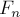
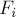
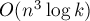

MAXimal
добавлено: 10 Jun 2008 16:41
редактировано: 3 May 2012 2:34
Содержание [скрыть]
Бинарное возведение в степень
Бинарное (двоичное) возведение в степень — это приём, позволяющий возводить любое число в  -ую степень за
-ую степень за  умножений (вместо умножений при обычном подходе).
умножений (вместо умножений при обычном подходе).
Более того, описываемый здесь приём применим к любой ассоциативной операции, а не только к умножению чисел. Напомним, операция называется ассоциативной, если для любых  выполняется:
выполняется:
Наиболее очевидное обобщение — на остатки по некоторому модулю (очевидно, ассоциативность сохраняется). Следующим по "популярности" является обобщение на произведение матриц (его ассоциативность общеизвестна).
Алгоритм
Заметим, что для любого числа  и чётного числа выполнимо очевидное тождество (следующее из ассоциативности операции умножения):
и чётного числа выполнимо очевидное тождество (следующее из ассоциативности операции умножения):
мы показали, как, потратив всего одну операцию умножения, можно свести задачу к вдвое меньшей степени.Осталось понять, что делать, если степень нечётна. Здесь мы поступаем очень просто: перейдём к степени  , которая будет уже чётной:
, которая будет уже чётной:
Итак, мы фактически нашли рекуррентную формулу: от степени мы переходим, если она чётна, к , а иначе — к . Понятно, что всего будет не более переходов, прежде чем мы придём к (базе рекуррентной формулы). Таким образом, мы получили алгоритм, работающий за  умножений.
умножений.
Реализация
Простейшая рекурсивная реализация:
int binpow (int a, int n) { if (n == 0) return 1; if (n % 2 == 1) return binpow (a, n-1) * a; else { int b = binpow (a, n/2); return b * b; } }
Нерекурсивная реализация, также оптимизированная (деления на 2 заменены битовыми операциями):
int binpow (int a, int n) { int res = 1; while (n) if (n & 1) { res *= a; --n; } else { a *= a; n >>= 1; } return res; }
Эту реализацию можно ещё несколько упростить, заметив, что возведение в квадрат осуществляется всегда, независимо от того, сработало условие нечётности или нет:
int binpow (int a, int n) { int res = 1; while (n) { if (n & 1) res *= a; a *= a; n >>= 1; } return res; }
Наконец, стоит отметить, что бинарное возведение в степень уже реализовано в языке Java, но только для класса длинной арифметики BigInteger (функция pow этого класса работает именно по алгоритму бинарного возведения).
Примеры решения задач
Эффективное вычисление чисел Фибоначчи
Условие. Дано число . Требуется вычислить , где  — последовательность чисел Фибоначчи.
Решение. Более подробно это решение описано в статье о последовательности Фибоначчи. Здесь же мы лишь кратко приведём суть этого решения.
Основная идея следующая. Вычисление очередного числа Фибоначчи основывается на знании двух предыдущих чисел Фибоначчи: а именно, каждое следующее число Фибоначчи получается как сумма двух предыдущих. Это означает, что мы можем построить матрицу , которая будет соответствовать этому преобразованию: как по двум числам Фибоначчи и вычислить следующее число, т.е. перейти к паре , . Например, применяя это преобразование раз к паре  и , мы получим пару и . Таким образом, возведя матрицу этого преобразования в -ую степень, мы тем самым найдём искомое за время , что нам и требовалось.
и , мы получим пару и . Таким образом, возведя матрицу этого преобразования в -ую степень, мы тем самым найдём искомое за время , что нам и требовалось.
Возведение перестановки в  -ую степень
-ую степень
Условие. Дана перестановка  длины . Требуется возвести её в
длины . Требуется возвести её в  -ую степень, т.е. найти, что получится, если к тождественной перестановке раз применить перестановку .
-ую степень, т.е. найти, что получится, если к тождественной перестановке раз применить перестановку .
Решение. Просто применим к перестановке описанный выше алгоритм бинарного возведения в степень. Никаких отличий по сравнению с возведением чисел в степень — нет. Решение получается с асимптотикой  .
.
(Примечание. Данную задачу можно решить и более эффективно, за линейное время. Для этого достаточно выделить в перестановке все циклы, после чего рассмотреть по отдельности каждый цикл и, взяв по модулю длины текущего цикла, найти ответ для этого цикла.)
Быстрое применение набора геометрических операций к точкам
Условие. Даны точек  , и даны
, и даны  преобразований, которые надо применить к каждой из этих точек. Каждое преобразование — это либо сдвиг на заданный вектор, либо масштабирование (умножение координат на заданные коэффициенты), либо вращение вокруг заданной оси на заданный угол. Кроме того, имеется составная операция циклического повторения: она имеет вид "повторить заданное число раз заданный список преобразований" (операции циклического повторения могут вкладываться друг в друга).
преобразований, которые надо применить к каждой из этих точек. Каждое преобразование — это либо сдвиг на заданный вектор, либо масштабирование (умножение координат на заданные коэффициенты), либо вращение вокруг заданной оси на заданный угол. Кроме того, имеется составная операция циклического повторения: она имеет вид "повторить заданное число раз заданный список преобразований" (операции циклического повторения могут вкладываться друг в друга).
Требуется вычислить результат применения указанных операций ко всем точкам (эффективно, т.е. за время, меньшее чем , где — общее количество операций, которые необходимо сделать).
Решение. Посмотрим на разные виды преобразований с точки зрения того, как они изменяют координаты:
- Операция сдвига — она просто прибавляет ко всем координатам единицу, домноженную на некоторые константы.
- Операция масштабирования — она умножает каждую координату на некоторую константу.
- Операция вращения вокруг оси — её можно представить следующим образом: новые получаемые координаты можно записать как линейную комбинацию старых.
(Мы не будем здесь уточнять, каким образом это производится. Например, можно для простоты представить это в виде комбинации пяти двумерных поворотов: сначала в плоскостях и так, чтобы ось вращения совпала с положительным направлением оси , затем требуемый поворот вокруг оси в плоскости , затем обратные повороты в плоскостях и так, чтобы ось вращения вернулась в своё исходное положение.)
Как легко видеть, каждое из этих преобразований — это пересчёт координат по линейным формулам. Таким образом, любое такое преобразование можно записать в виде матрицы :
которое при умножении (слева) на строку из старых координат и константы-единицы даёт строку из новых координат и константы-единицы:
(Почему понадобилось вводить фиктивную четвёртую координату, всегда равную единице? Без этого не получилось бы реализовать операцию сдвига: ведь сдвиг — это как раз прибавление к координатам единицы, домноженной на некоторые коэффициенты. Без фиктивной единицы мы бы смогли только реализовывать линейные комбинации самих координат, а прибавлять к ним заданные константы — не смогли бы.)
Теперь решение задачи становится почти тривиальным. Раз каждая элементарная операция описывается матрицей, то последовательность операций описывается произведением этих матриц, а операция циклического повторения — возведением этой матрицы в степень. Таким образом, мы за время можем предпосчитать матрицу , описывающую все преобразования, и затем просто умножить каждую точку на эту матрицу — тем самым, мы ответим на все запросы за время  .
.
Количество путей фиксированной длины в графе
Условие. Дан неориентированный граф  с вершинами, и дано число . Требуется для каждой пары вершин
с вершинами, и дано число . Требуется для каждой пары вершин  и
и  найти количество путей между ними, содержащих ровно рёбер.
найти количество путей между ними, содержащих ровно рёбер.
Решение. Более подробно эта задача рассматривается в отдельной статье. Здесь же лишь напомним суть этого решения: мы просто возводим в -ую степень матрицу смежности этого графа, и элементы этой матрицы и будут являться решениями. Итоговая асимптотика — .
(Примечание. В той же статье рассматривается и другая вариация этой задачи: когда граф взвешенный, и требуется найти путь минимального веса, содержащий ровно рёбер. Как показано в этой статье, данная задача также решается с помощью бинарного возведения в степень матрицы смежности графа, однако вместо обычной операции перемножения двух матриц следует использовать модифицированную: вместо умножений берётся сумма, а вместо суммирования — взятие минимума.)
Вариация бинарного возведения в степень: перемножение двух чисел по модулю
Приведём здесь интересную вариацию бинарного возведения в степень.
Пусть перед нами стоит такая задача: перемножить два числа и  по модулю :
по модулю :
Предположим, что числа могут быть достаточно велики: настолько, что сами числа помещаются во встроенные типы данных, а вот их непосредственное произведение — уже нет (отметим, что нам также потребуется, чтобы сумма чисел помещалась во встроенный тип данных). Соответственно, задача в том, чтобы посчитать искомую величину , не прибегая к помощи длинной арифметики.
Решение таково. Мы просто применяем алгоритм бинарного возведения, описанный выше, только вместо операции умножения мы будем производить сложения. Иными словами, перемножение двух чисел мы свели к  операций сложения и умножения на два (что тоже, по сути, есть сложение).
операций сложения и умножения на два (что тоже, по сути, есть сложение).
(Примечание. Данную задачу можно решить и по-другому, прибегнув к помощи операций с числами с плавающей точкой. А именно, посчитаем в числах с плавающей точкой выражение , и округлим его к ближайшему целому. Так мы найдём приблизительное частное. Отняв его от произведения (проигнорировав переполнения), мы, скорее всего, получим относительно небольшое число, которое можно взять по модулю — и вернуть его в качестве ответа. Это решение выглядит довольно ненадёжным, но оно весьма быстрое, и очень кратко реализуется.)
Задачи в online judges
Список задач, которые можно решить, используя бинарное возведение в степень: